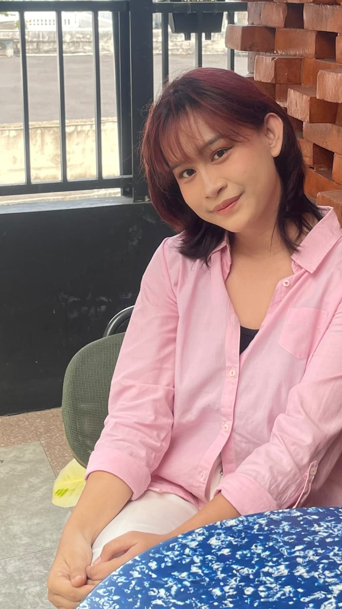

Hi, I'm Theresa
Mahasiswi Pendidikan Teknik Informatika — Universitas Negeri Malang yang memadukan kepekaan desain antarmuka (UI/UX) dengan pemahaman teknis pengembangan web.

click to enlarge ✨
Education & Focus:
- 🎓 Pend. Teknik Informatika — UM
- 🎨 UI/UX Design & Prototyping
- 💻 HTML, CSS & JS Basics
About Me ✿
Saya adalah mahasiswi Pendidikan Teknik Informatika di Universitas Negeri Malang dengan minat kuat di bidang UI/UX Design. Latar belakang pendidikan informatika melatih saya berpikir terstruktur dan memahami batasan teknis saat merancang antarmuka.
Saya terbiasa menerjemahkan kebutuhan pengguna menjadi user flow yang jelas, wireframe, hingga interactive prototype di Figma yang siap diimplementasikan oleh tim developer. Saya antusias untuk berkontribusi dalam tim produk maupun kesempatan magang.
🔍 Klik kartu jurnal ini untuk melihat foto ukuran penuh
Featured UI/UX Project
Eksplorasi perancangan antarmuka dan pengalaman pengguna yang dikerjakan menggunakan Figma.
Keahlian Dasar
Tools desain dan fondasi pengembangan web yang saya kuasai.
Let's Connect! 💌
Terbuka untuk peluang magang (internship), kolaborasi proyek UI/UX, maupun diskusi lebih lanjut. Silakan hubungi saya melalui kontak berikut: